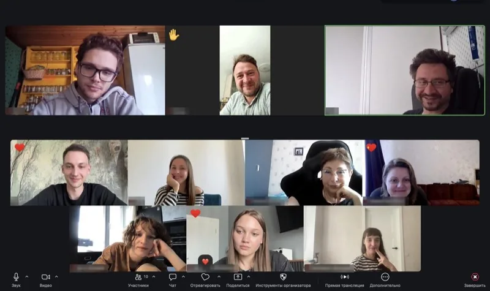
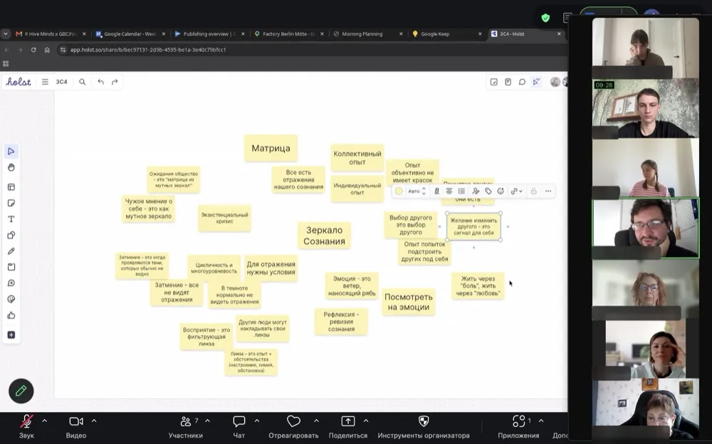
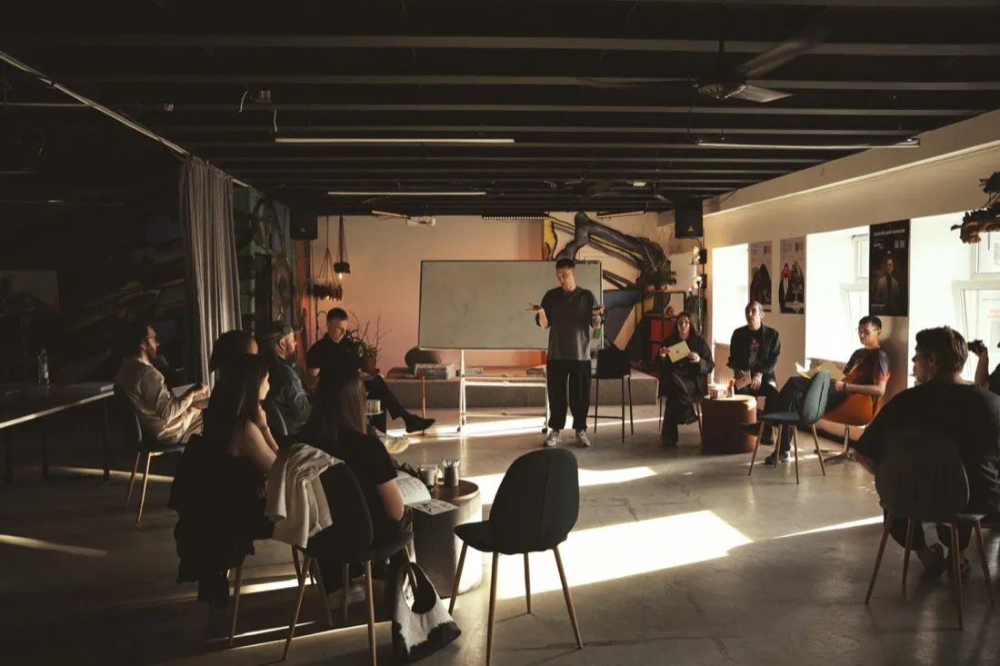

Жду подвоха
Он ответил суше обычного — и я уже ищу причину: вспоминаю прошлые разговоры, читаю между строк. Потом оказывается: он просто устал.

За 3 часа разберёшь одну повторяющуюся ситуацию, увидишь, где всё начинается, и выберешь один посильный шаг.
Группа 5 августа — sold out · следующая группа 12 августа
Если хотя бы в одной карточке узнаёшь себя, с этого уже можно начать.
Он ответил суше обычного — и я уже ищу причину: вспоминаю прошлые разговоры, читаю между строк. Потом оказывается: он просто устал.
Не хочу — но соглашаюсь. Потом злюсь на другого и на себя: почему опять не сказал прямо?
Перечитываю переписку, задаю контрольный вопрос, смотрю, когда был в сети. На минуту становится спокойнее. Потом снова хочется проверить.
Просить неловко: кажется, что должен справиться сам. В итоге молча тяну всё на себе, устаю и обижаюсь, что никто не помог.
Даже когда всё спокойно, я остаюсь настороже: вдруг что-то случится. Отдых откладываю до момента, когда всё будет сделано — то есть почти всегда.
«Ты как?» — «Нормально». Разговор продолжается, а я уже отвечаю односложно и жду, когда можно будет уйти.
Часто круг начинается с мелочи — а заканчивается знакомым «ну вот, я же говорил».
Пауза, сухой ответ, чужая ошибка.
«Ему всё равно». «На него нельзя положиться».
Отдаляется, ждёт указаний или так и не понимает, что мне было нужно.
Моя версия кажется фактом. В следующий раз круг запускается ещё быстрее.Моя версия начинает казаться фактом.
Ситуации у всех разные, но в них часто повторяется одно и то же. На встрече это становится легче заметить.
Хочу быть ближе, но пауза в переписке уже кажется плохим знаком. Начинаю проверять, контролировать или соглашаться, лишь бы не потерять отношения. Помогаю всем — и обижаюсь, когда этого не замечают.
Отдых откладываю, пока всё не сделано. Сильные чувства стараюсь быстро привести в порядок, а расслабиться трудно — кажется, что потеряю контроль.
По-старому больше не хочу, а нового способа пока не вижу. Не понимаю, чего хочу сам, и долго прокручиваю варианты вместо шага.

Не нужно заранее придумывать точную тему. Достаточно вспомнить одну ситуацию, которая повторяется, цепляет или не отпускает.
Ведущий предлагает образ и показывает, как устроен этот круг. Метафора даёт общий каркас, к которому можно прикладывать разные ситуации.
Каждый вспоминает несколько эпизодов, в которых узнаёт части этого круга. Можно выбрать простую ситуацию и не рассказывать больше, чем хочется.
В группах по три-четыре человека чужие ситуации показывают, как тот же круг складывается у разных людей. Запутанное и случайное начинает обретать форму.
Команды делятся общими наблюдениями — без личных подробностей. В группе до двенадцати человек остаётся достаточно разных примеров и время на ситуацию каждого.
Каждая встреча самостоятельна и посвящена одной стороне доверия.
Когда трудно понять, чего я хочу и на что могу опереться в своём решении. Смотрим, как отличать собственный голос от тревоги и чужих ожиданий.
Когда додумываешь за другого, боишься спросить прямо или не веришь тёплым словам. Смотрим, как проверять свои догадки и оставлять место живому человеку.
Когда кажется, что без моего контроля всё развалится. Смотрим, что действительно нужно держать в руках, а что можно отпустить без наивности.
Мы не обещаем новую личность. Меняется конкретное: насколько рано ты замечаешь свой цикл — и что успеваешь сделать иначе.
Цикл получает имя и границы: ты увидел его в двух десятках чужих историй. «Со мной что-то не так» превращается в «вот как это устроено» — и «я не один такой». Уходишь со следующим посильным шагом.
Ловишь защиту в моменте — в паузе, в сжатом теле. И появляется первое другое: не уходишь в себя после неловкой паузы, говоришь, что на самом деле беспокоит, просишь о помощи, не прокручиваешь сценарии в голове.
Меняется жизнь между встречами: кто-то перестаёт перечитывать переписку, кто-то выходит из отношений, державшихся на недоверии, кто-то перестаёт прятать себя настоящего — сначала это больно, потом свободно. И остаётся среда, где о важном говорят каждую неделю.
«Это действительно помогает лучше понять себя, посмотреть со стороны… после занятия у меня случился инсайт.»Из обратной связи участников
«Здесь я могу быть собой и проявлять те чувства и эмоции, которые не всегда можно так открыто проявить в обычной жизни.»Из обратной связи участников
«Голова где-то очистилась, а где-то наполнилась. Ухожу с тёплыми чувствами.»Из финального круга
«Такой близости, откровенности, теплоты и понимания я не испытывала никогда.»Из обратной связи участников
«С каждым занятием всё больше нового узнавала о себе, возникали инсайты… я сама изнутри намного многограннее.»Из обратной связи участников
«Регулярные сессии помогли мне чаще включать осознанность действий. Я чувствую себя лучше, чем год назад.»Из обратной связи участников
Отзывы публикуем без имён — это часть правила круга: сказанное на встрече не выносится наружу. Даже хорошее.

Можно входить постепенно: слушать, выбирать, чем делиться, замечать, где защита срабатывает уже в самой группе.
Так проще понять формат без лишней серьёзности и без обещаний, которых здесь нет.
Каждая встреча самостоятельна. Приходи на одну — дальше решишь.
Никто не разбирает тебя и не даёт правильных ответов. Материал — твой опыт, и распоряжаешься им ты.
Ведущий не рассказывает, как жить. Его роль — собрать среду, где опыт каждого начинает работать на всех.
Метафоры здесь — инструмент мышления, а не мистика. Никаких гуру и истин, с которыми нужно согласиться.
Онлайн в Zoom, раз в неделю. Ближайшая встреча — в среду, , 19:25 мск. Запись открыта до вторника, , 24:00 мск. Группа до 12 человек, состав собирается заново каждую неделю. Цикл, который ты узнал выше, сам не остановится: он подтверждает себя, пока на него не посмотришь со стороны.
≈1490 ₽ за встречу · вместо 22 800 ₽
Горизонт, о котором участники говорят «я нашла себя»: меньше контроля и проверок, больше себя настоящего.
1650 ₽ за встречу · вместо 11 400 ₽
Научиться ловить защиту в моменте — в паузе, в теле, до сорванного разговора.
Увидеть свой цикл со стороны и унести следующий шаг. Достаточно побывать — остальное сделает среда. Решишь идти дальше — в течение 24 часов эти 1900 ₽ зачтутся в абонемент.
Взрослые 25–45 лет: специалисты, предприниматели, люди из помогающих профессий и все, кому знакомы сложности с доверием, контролем и прямыми разговорами. Специальная подготовка не нужна.
До 12 человек. Небольшая группа — часть формата: так у каждого остаётся время на свою ситуацию. Если записалось меньше трёх, встречу переносим и возвращаем деньги.
Камера и голос понадобятся для работы в малых группах. Перед всеми говорить в одиночку не нужно: команды выходят в общий круг вместе. Чем делиться, всегда решаешь ты.
Да. Можно выключить камеру, выйти на несколько минут или пропустить вопрос. Никто не заставляет отвечать или рассказывать больше, чем ты хочешь.
Обсуждения в тройках не записываются, а выбранная тобой ситуация остаётся в малой группе. В общем круге записываются только выступления команд с общими выводами — без личных подробностей.
Раз в неделю, онлайн. Если встреча сдвигается — группа узнаёт заранее в Telegram-канале.
Да. Не обязательно заранее понимать, что именно хочется рассмотреть. Иногда достаточно чувствовать, что эта встреча тебе подходит.
Специально — никак: материал встречи — твой собственный опыт. Перед встречей в канале группы появится короткое задание на пять минут. Этого достаточно.
Да. Одна встреча — нормальный вход. Если зацепит, можно взять абонемент — шесть или двенадцать встреч.
Сразу после оплаты откроется Telegram-канал группы: там ссылка на Zoom и напоминания. Если переадресация не сработала — напиши Эду лично: t.me/ed_educate, добавим вручную.
Напиши Эду после встречи — вернём деньги. Без анкет и выяснений: формат правда подходит не всем, и это нормально.
Нет. Это образовательная групповая практика для взрослых: мы рассматриваем повседневные ситуации, делимся наблюдениями и пробуем другой способ действия. Здесь нет диагностики, лечения и индивидуальной терапевтической работы.
Лучше идти в индивидуальную или кризисную помощь. Здесь нет диагностики, лечения и экстренной поддержки.
Встречи из абонемента не сгорают: это количество встреч, а не жёсткие даты. Пропустил неделю — просто приходишь на следующую.
Да. Каждая встреча самостоятельна — присоединиться можно с любой недели.
Друзья обычно помогают обсудить один эпизод: поддерживают, советуют или занимают сторону. Здесь метафора задаёт каркас всего цикла, а множество разных ситуаций помогает быстрее схватить повторяющийся паттерн: где он начинается, как поддерживает себя и в каком месте можно сделать иначе.
Например, той, где ты перепроверяешь, берёшь всё на себя, соглашаешься через силу или долго не решаешься спросить прямо.
Не нужно заранее выбирать шесть или двенадцать встреч. Начни с одной и посмотри, подходит ли тебе формат.